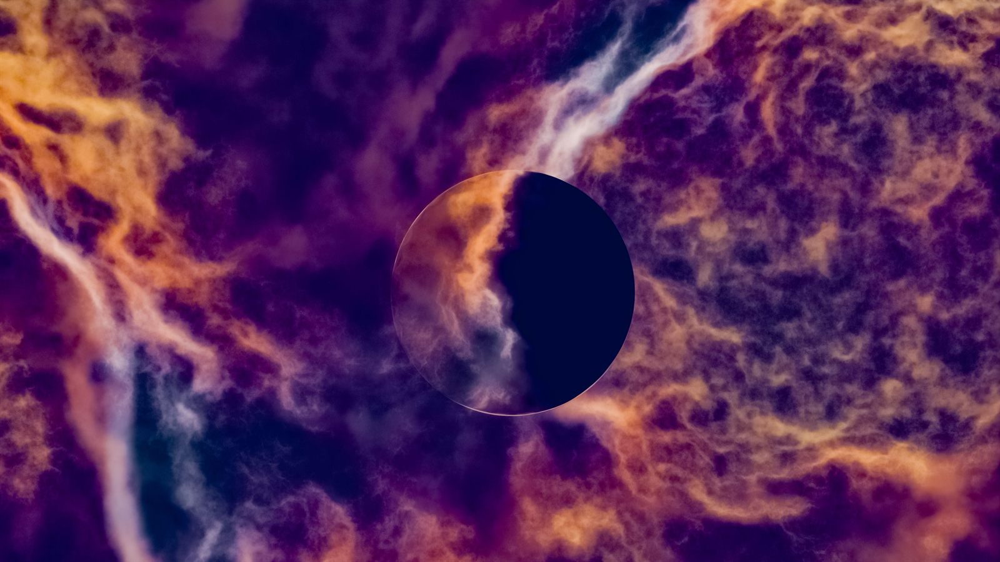

În sfârșit poți respira ușurat. După trei săptămâni de întârzieri haotice în călătorii, mesaje înțelese greșit, foști care se întorc din morți și o tehnologie care pare să aibă ceva personal cu tine, Mercur retrograd se încheie oficial.
Pe măsură ce planeta comunicării, a intelectului și a sincronizării devine directă (adică pornește din nou înainte pe cer), ceața cosmică densă începe să se ridice. Pentru că această retrogradare a trecut mult prin apele adânci și intense ale Scorpionului, ultimele săptămâni probabil au semănat cu o săpătură emoțională. Poate au ieșit la iveală secrete, limitele financiare au fost puse la încercare, iar relațiile intime au trecut prin teste serioase de rezistență.
Dar pe măsură ce Mercur își recapătă avântul, confuzia se transformă în limpezime deplină. Iată ce urmează și cum va simți zodiacul această schimbare.
La ce să te aștepți: perioada de „umbră retrogradă”
Înainte să semnezi pe loc un contract uriaș, să lansezi o afacere nouă sau să trimiți un mesaj riscant, trebuie să afli despre umbra retrogradării (pe care astrologii o numesc cu drag „retroshade”).
Chiar dacă Mercur merge înainte, planetei îi trebuie câteva săptămâni ca să-și recapete viteza obișnuită și să parcurgă din nou exact drumul pe care tocmai l-a făcut de-a-ndăratelea. Gândește-te la un om abia trezit dintr-un pui de somn: e treaz, dar probabil n-ar fi cazul să-i ceri să rezolve imediat o problemă de matematică. Folosește următoarele două săptămâni ca să pui încet în practică lecțiile învățate în timpul retrogradării, în loc să te arunci în acțiuni impulsive.
Ce urmează pentru elementul tău
Sfârșitul acestei retrogradări îi afectează pe toți diferit, în funcție de locul în care ți-a atins harta natală. Iată ce pot aștepta cele patru elemente astrologice, acum, când energia se limpezește:
Zodiile de apă (Scorpion, Rac, Pești): încheieri emoționale
Ai simțit această retrogradare până în suflet. Probabil a scos la suprafață răni emoționale vechi, ți-a pus la încercare limitele psihice și te-a obligat să înfrunți dinamici din relații pe care încercai să le ignori. Pe măsură ce Mercur merge înainte, vei simți în sfârșit că poți încheia un capitol. Conversațiile care păreau imposibile acum două săptămâni vor curge dintr-odată ușor, iar intuiția ta va redeveni ascuțită ca o lamă.
Zodiile de pământ (Taur, Fecioară, Capricorn): avânt practic
Zodiile de pământ urăsc ineficiența, așa că retrogradările sunt incredibil de frustrante pentru tine. Probabil ai avut de-a face cu plăți întârziate, proiecte de carieră blocate sau coșmaruri logistice. Unda verde a sosit în sfârșit. Banii blocați vor intra, contractele vor avea în sfârșit sens, iar mișcările de carieră pe care le-ai plănuit în culise vor începe să prindă un avânt real, palpabil.
Zodiile de aer (Gemeni, Balanță, Vărsător): comunicarea repornește
Mercur este planeta care guvernează Gemenii, ceea ce înseamnă că zodiile de aer sunt mereu lovite direct când el intră în retrogradare. Neînțelegerile nesfârșite, greșelile de tastare și fricțiunile sociale s-au terminat. Talentul tău natural de a lega cunoștințe și de a purta conversații spirituale revine pe deplin. E momentul să lămurești lucrurile cu prietenii, să apeși „trimite” pe e-mailurile importante pe care le tot amâni și să revii în viața socială fără teama că vei spune ce nu trebuie.
Zodiile de foc (Berbec, Leu, Săgetător): pasiune reaprinsă
Probabil această retrogradare ți s-a părut ca o pătură udă aruncată peste scânteia ta creativă. Poate te-ai simțit neobișnuit de lent, lipsit de inspirație sau blocat în viața amoroasă. Când Mercur devine direct, avântul tău înfocat se întoarce. Blocajele creative se vor sfărâma și vei simți dintr-odată nevoia să acționezi cu îndrăzneală, să-ți plănuiești următoarea mare aventură și să revii în lumina reflectoarelor.
Surse și lecturi suplimentare
- Astrology.com: “What Happens When Mercury Goes Direct?”
- The AstroTwins / Astrostyle: “Mercury Retrograde Shadow Phase Explained”
- Cafe Astrology: “Mercury Transits and Retrograde Cycles”